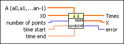

ODE Linear nth Order Numeric VI
Owning Palette: Ordinary Differential Equations VIs
Requires: Full Development System
Solves an nth-order, homogeneous linear differential equation with constant coefficients in numeric form.

 Add to the block diagram Add to the block diagram |
 Find on the palette Find on the palette |


 1exp(1t) + … +
1exp(1t) + … +